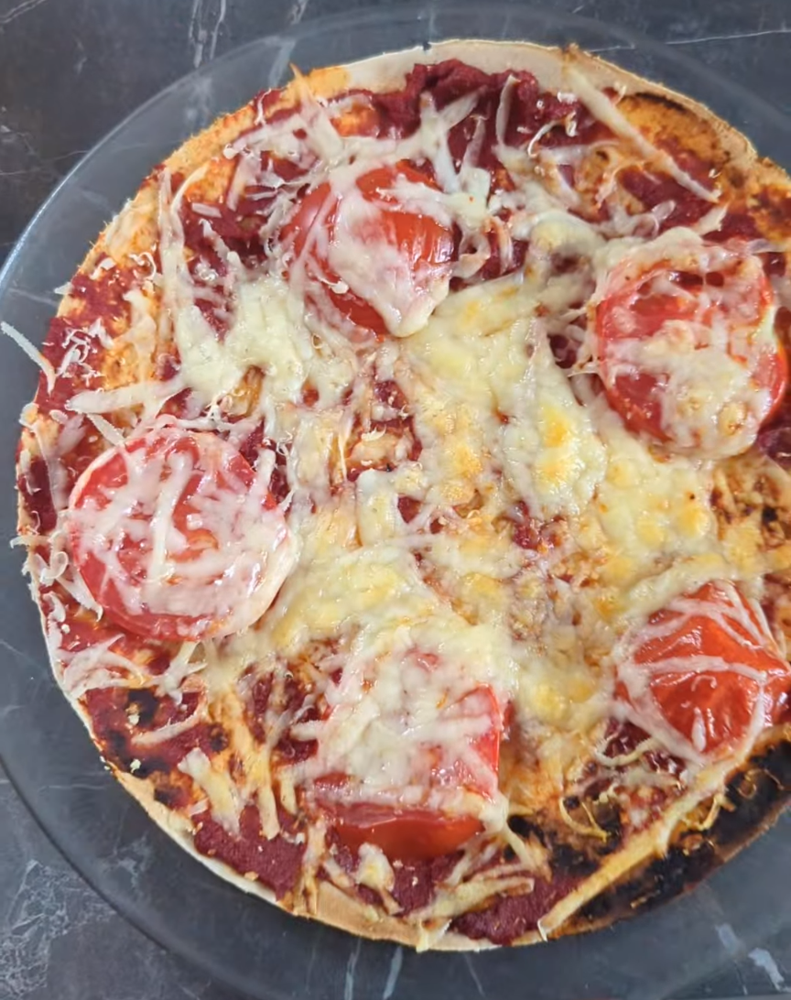

Gluten-Free Wrap Pizza

This is such a quick and easy lunch and something I make quite often.
Using a gluten-free wrap as the pizza base means there’s no messing
around making dough, and you can add whatever toppings you fancy.
I often make mine the night before, leave it to cool and then take it
to work in my lunch box the next day.
Ingredients
- 1 gluten-free wrap
- Tomato purée
- Toppings of your choice
- Grated cheese
Method
- Place your gluten-free wrap on a baking tray.
- Spread tomato purée over the wrap.
- Add whatever toppings you like.
- Sprinkle grated cheese over the top.
- Put it under the grill until the cheese has melted, or pop it into a hot oven for around 10 minutes.
- You can eat it straight away while it’s hot, or leave it to cool completely and put it in your lunch box for work.
It’s really simple, you can change the toppings every time, and it makes
a lovely alternative to sandwiches for lunch.
← Back to IBS Girl